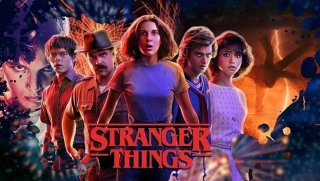
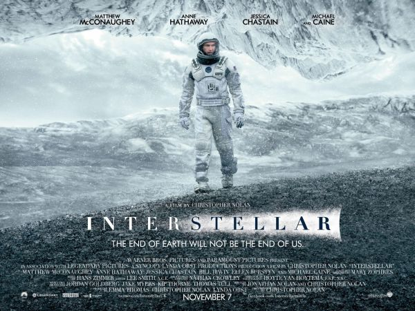

Merhaba, Ben Handenur Özcan. 1998 Trabzon doğumluyum. Kocaelinde yaşamaktayım. Kocaeli üniversitesi elektronik ve haberleşme mühendisliği bölümünden bu yıl itibari ile mezun oldum. Web geliştirme alanında çalışıyorum. Patika.dev'in sağlamış olduğu uygulama ile ilerlemek istediğim bu alanda bir çok şey öğrenmeye devam etmekteyim.
Şuanda izlemekte olduğum Stranger Things dizisi, ABD yapımı bilimkurgu-korku türündeki internet dizisidir. Duffer Kardeşler tarafından yönetmenliği, senaristliği ve yönetici yapımcılığı üstlenilen dizi aynı zamanda Shawn Levy ve Dan Cohen tarafından üretilmiştir.
İlk bölüm yayın tarihi:15 Temmuz 2016
Sezon sayısı:4
Yayın tarihi: 15 Temmuz 2016 - günümüz
Tür: Bilimkurgu; Korku; Doğaüstü; Periyod draması
Programın yaratıcıları: Matt Duffer, Ross Duffer.
Christopher Nolan tarafından yönetilen epik bilimkurgu türündeki, 2014 yapımı ABD filmi. Başrollerinde Matthew McConaughey, Anne Hathaway, Jessica Chastain ve Michael Caine yer almaktadır.
Yayın tarihi: 7 Kasım 2014
Tür: Macera, Drama
Yönetmen: Christopher Nolan
Kurgu: Lee Smith